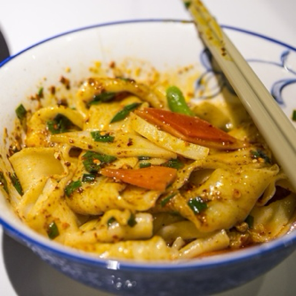
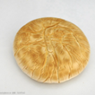
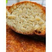
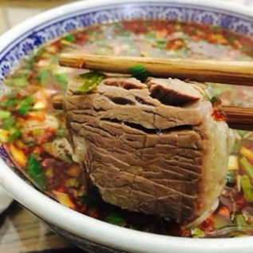
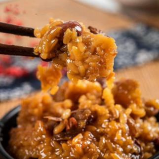
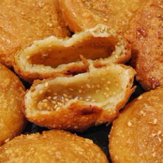

biangbiang面
Biangbiang 面是陕西关中地区家喻户晓的经典面食，也是 “陕西八大怪” 中 “面条像裤带” 的典型代表。它因手工制作时，面团在案板上反复摔打发出 “biang、biang” 的厚重声响而得名，字形复杂、寓意吉祥，是陕西饮食文化里极具特色的符号。
地道的 Biangbiang 面选用关中优质冬小麦粉，经和面、醒面、扯面、摔面等多道手工工序制成。面条宽而厚、长而韧，形似裤带，下锅煮熟后筋道爽滑、嚼劲十足。最经典的吃法是油泼，面上撒匀辣椒面、蒜末、葱花、花椒粉，再浇上一勺滚烫菜籽油，瞬间激发出扑鼻香气，搭配生抽、香醋调味，简单却极具冲击力。
一碗正宗的 Biangbiang 面，色泽红亮、香辣开胃，面香与油香、椒香完美融合，吃起来豪迈过瘾。它既承载着关中平原的物产特色，也体现了陕西人朴实豪爽的性格，口感粗犷却滋味十足，是来西安必尝、本地人百吃不厌的灵魂面食。
西安美食鉴赏

乾县锅盔

荞面油坨坨

黄米凉糕

水盆大肉

甑糕蜜枣粽

老西安糖油糕